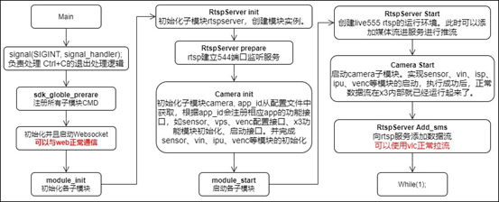

3.2.12. Sunrise_camera开发说明
3.2.12.1. Sunrise camera 系统设计
系统框图
Sunrise camera实现了IPC、 USB camera、video box三种场景应用的demo展示。
Sunrise camera 源码包括用户操作层的 WebPages，整个通信模块层，整个功能模块层；本文档主要介绍这三个模块的设计。
Hal层模块由地平线平台软件、算法工具链研发，包括系统BSP、多媒体相关模块调用接口库，BPU模块推理库等；
Kernel版本包含标准驱动库的基础上，添加地平线X3M/E相关模块驱动。
软件框图如下所示：
微核设计
微核架构（microkernel architecture）又称为”插件架构”（plug-in architecture），指的是软件的内核相对较小，主要功能和业务逻辑都通过插件实现。
内核（core）通常只包含系统运行的最小功能。插件则是互相独立的，插件之间的通信，应该减少到最低，避免出现互相依赖的问题。
架构优缺点
优点
良好的功能延伸性，需要什么功能，开发插件即可。
功能之间是隔离的，插件可以独立的加载和卸载，容易部署。
可定制性高，适应不同的开发需要。
可以渐进式开发，逐步添加功能。
缺点
扩展性差，内核通常是一个独立单元，不容易做成分布式。
开发难度相对较高，因为涉及到插件与内核的通信，以及插件登记。
3.2.12.2. Sunrise camera架构视图
模块划分
| 模块 | 目录 | 描述 |
|---|---|---|
| 核心模块 | communicate | 核心模块 |
| 公共库模块 | common | 公共操作函数，log/lock，内存环形缓冲区，线程操作，队列操作等 |
| Camera模块 | Platform | X3芯片或者其他芯片的平台相关代码 |
| 对外交互模块 | Transport | 设备和外接交互部分，rtspserver、websocket等 |
| 主程序入口 | Main | Main函数入口 |
顶层代码结构
.
├── build.sh # 当本源码放到 BPS 的PlatformSDK/unittest 目录下，在lunch编译环境后，可以使用本编译脚本
├── common # 公共库模块代码
├── communicate # 核心通信模块
├── config # 编译配置目录，X3使用config_x3_sdb.mk
├── docs # 用户使用文档和开发文档
├── main # 主入口程序
├── Makefile # 编译脚本，当在/opt目录下部署交叉编译工具链后，本源码可以在任意目录下执行编译
├── makefile.param # 编译配置，指定 config_x3_sdb.mk 作为编译目标
├── Platform # Camera模块，平台、应用场景代码，X3相关代码都在本目录下实现
├── start_app.sh # 设备上的启动脚本，可以配置成上电自启动
├── Transport # rtspserver 和 websocket模块代码实现
└── WebServer # lighttpd程序、配置和web页面
编译
建议使用 Ubuntu-18.04操作系统
检查是否已经安装好地平线X3芯片对应的交叉编译工具链，一般放在PlatformSDK资料包中，详细配置请参考BSP开发手册。
在安装交叉编译工具链后，可在任意目录下执行 make 编译。在源码当前目录会生成 sunrise_camera目录。打包 sunrise_camera目录， WebServer 目录 和 start_app.sh 三个文件后下载到设备上运行。
tar -czvf sunrise_camera_v1.0.0.tar.gz sunrise_camera WebServer start_app.sh
核心模块（communicate）
概述
架构核心模块，最小运行单位；根据编译选项调用模块注册接口函数注册其他支出的模块，并且中转模块CMD指令。
当模块间交互时，接收到的CMD如果已经注册和使能，则中转到受理子模块处理完成后返回请求模块。
当模块间交互时，接收到的CMD没有注册或者未使能，则CMD调用失败。
功能描述
模块插件静态插拔控制
模块CMD指令中转
示例：
camera子模块中定义了 SDK_CMD_CAMERA_GET_CHIP_TYPE 命令，调用camera_cmd_register 函数注册该CMD后，当websocket子模块收到web页面请求获取芯片类型时，websocket模块可以通过以下代码调用camera子模块中的接口。
整个过程如下图所示：
模块代码结构
.
├── include
│ ├── sdk_common_cmd.h # 定义系统中所有子模块的CMD
│ ├── sdk_common_struct.h # 定义每个CMD对应使用到的数据结构
│ └── sdk_communicate.h # 定义本模块接口函数
├── Makefile
└── src
└── sdk_communicate.c # 接口代码实现
接口描述
sdk_globle_prerare
各子模块的xxx_cmd_register()函数会集中放到这个函数中，主程序启动时，通过调用本接口将所有子模块需要注册并使能的的CMD注册进子系统中。
每个子模块都要实现 xxx_cmd_register()，在该函数中实现子模块CMD注册。这是整个系统能够正常运行的基本前提。
示例：
sdk_cmd_register
CMD注册接口。
sdk_cmd_unregister
CMD注销接口。
sdk_cmd_impl
子模块通过调用本接口实现调用其他子模块实现的接口功能。
公共库模块（common）
概述
程序公共库类，包含但不限于日志操作、锁操作、线程封装、环形缓冲区操作、cJSON、base64；
本模块主要把编程中会使用到的公共类、公共函数进行封装；避免相同操作的函数实现在多处出现。
本模块的更新影响所有模块，需要谨慎操作。
功能描述
无
模块代码结构
.
├── Makefile # 编译脚本
├── makefile.param
└── utils
├── include # 头文件
│ ├── aes256.h
│ ├── base64.h
│ ├── cJSON_Direct.h
│ ├── cJSON.h
│ ├── cmap.h
│ ├── common_utils.h
│ ├── cqueue.h
│ ├── gen_rand.h
│ ├── lock_utils.h
│ ├── mqueue.h
│ ├── mthread.h
│ ├── nalu_utils.h
│ ├── sha256.h
│ ├── stream_define.h
│ ├── stream_manager.h
│ └── utils_log.h
├── Makefile
└── src
├── aes256.c
├── base64.c
├── cJSON.c
├── cJSON_Direct.c
├── cmap.c
├── common_utils.c
├── cqueue.c
├── gen_rand.c
├── lock_utils.c
├── mqueue.c
├── mthread.c
├── nalu_utils.c
├── sha256.c
├── stream_manager.c
└── utils_log.c
Camera模块（Camera）
概述
模块主要包括：视频编码、ISP控制、图像控制、OSD水印、抓拍、视频输出。
本模块内部结构如下：
api_camera作为本模块入口，定义支持的CMD命令集；
camera_handle完成配置读写、场景接口赋值；
x3_ipc_impl、x3_sub_cam_impl、x3_box_impl实现场景功能；
x3_bpu模块实现算法推理，作为一个公共模块供调用。
功能描述
目前本模块下实现了 IPC、 USB camera、video box三种应用场景的接口实现。新增一个应用场景的实现，只要实现 camera_ops_t 结构体定义的接口即可。
启动一个场景应用的流程如下：
其他子模块的初始化、启动流程都可以参考本流程图。
模块代码结构
代码路径： Platform/x3
.
├── api # CMD注册
├── main # CMD 注册的实际功能接口实现
├── Makefile # 编译脚本
├── makefile.param # 编译配置
├── model_zoom # 模型仓库
├── sync_media_sdk.sh # 从BPS Platform 的 prebuilts/root目录下同步使用到的sdk 库和头文件的脚本
├── test_data # 存放测试用的h264码流文件和程序配置文件 x3_config.json
├── x3_auto_start # 配置自启动的时候，可以直接使用本目录下的init.rc文件替换设备上 /init.rc文件
├── x3_bpu # bpu 算法接口使用封装
├── x3_bpu_predict # bpu predict库文件和头文件
├── x3_camera # IPC、 USB camera、box场景功能实现
├── x3_media_sdk # 媒体库和头文件
├── x3_sdk_readme.md # 媒体和bpu库同步说明
├── x3_sdk_swap # x3 硬件模块接口的简单封装
├── x3_sensor_libs # sensor用到的库，适配添加新sensor时需要向这个目录中提交需要的驱动接口库、ISP参数库和gdc配置文件，gdc配置文件视情况添加
└── x3_tools # live555MediaServer rtsp推流测试程序，把视频文件放到本目录下，再启动本程序，会自动建立推流服务。
x3_config.json配置文件主要参数说明
solution_id：场景配置
| 0 | IP摄像头 |
|---|---|
| 1 | USB摄像头 |
| 2 | 智能盒子 |
ipc_solution->pipeline_num :表示当前ipc运行时启动sensor的数量，目前支持最多2路
sensor_name： 图像传感器型号，目前支持F37，IMX415, OS8A10, OS8A10_2K
venc_bitrate: H264编码码率
box_solution->box_chns: 智能盒子方案运行编解码路数，支持1路，4路
alog_id：默认算法模型
| 0 | 不启动算法 |
|---|---|
| 1 | Mobilenet_v2 模型来自公版模型，可在地平线工具链中获取 |
| 2 | Yolov5 模型来自公版模型，可在地平线工具链中获取 |
| 3 | 地平线自研多任务模型，可在 ai express软件包中获取 |
对外交互模块（Transport）
概述
遵循传输协议与终端或平台交互的具体子模块；包含通过网络、rtspserver和websocket通信模块；
交互模块是模块间交互最多的部分，需要严格遵守设计约定。在向其他模块请求数据时都要通过定义的模块CMD进行处理。
RTSP Server模块
本模块是对live555的封装实现，把live555封装成init、prepare、start和add_sms等几个简单接口。目前x3上仅支持H264码流的推流。
本模块的启动和使用可以参考 主程序入口 章节的流程介绍。
Wesocket Server 模块
本模块完成与web上的操作交互，在web上进行相应操作后，websocket server接收到相应kind的命令和参数，在代码handle_user_massage.c 的 handle_user_msg 函数中处理进行相应的功能处理，如果要添加新的交互命令，请在该函数中增加。
目前支持的交互命令：场景切换、场景参数获取和设置、获取芯片类型、h264码率设置、系统时间同步、websocket码流拉流和停止等。
主程序入口（main）
概述
主程序入口，模块启动。
当前基本的子模块启动顺序如下，需要注意各模块启动顺序需要根据子模块间的依赖关系顺序启动。
执行流程

WebServer
概述
本模块提供lighttpd实现web httpd服务，让用户可以直接通过浏览器预览视频和配置应用场景。
功能描述
提供lighttpd编译说明，依赖库，编译好可在X3上执行的程序，并且提供一份配置好的配置文件，在lighttpd/webpages目录下存放web页面、css、js程序。
模块代码结构
.
├── fcgi # fcgi模块库
│ ├── include
│ ├── lib
│ └── version.txt
├── lighttpd-x3 # lighttpd
│ ├── cache
│ ├── cgi-bin
│ ├── config # 在x3能直接使用的配置文件
│ ├── lib
│ ├── log
│ ├── sbin
│ ├── server.pem
│ ├── share
│ ├── socktes
│ ├── upload
│ ├── vhosts
│ └── webpages # web页面、css、js文件
├── pcre # lighttpd 对齐有依赖
│ ├── include
│ ├── lib
│ └── version.txt
├── README.txt
└── start_lighttpd.sh # 单独启动WebServer的脚本
3.2.12.3. 添加新Sensor支持
概述
目前本源码已支持最常使用的F37（1080P）、IMX415(4K)、OS8A10三种sensor，其中OS8A10支持4K和 2K两种分辨率。三种sensor覆盖了最常用的2M、4M、8M三种分辨率的使用。
新增sensor的相关代码
需要新增或修改内容概述如下表所示：
| 项目 | 文件 | 说明 |
|---|---|---|
| 添加sensor库 | sensor接口驱动库 libxxx.so | sensor控制，存放sensor配置寄存器 |
| ISP参数库 libxxx_linear.so libxxx_dol2.so | 存放ISP tunning的配置参数 | |
| (非必须项)gdc配置文件 | 畸变矫正参数 | |
| 添加VIN配置代码 | sensor_xxx_config.c | 配置sensor、mipi、isp、ldc、dis模块数据结构参数 |
| sensor_xxx_config.h | ||
| 新增预配置接口 | x3_preparam.c | vin参数配置统一组织 |
| 场景应用参数选择代码 | x3_ipc_impl.c | 每个场景下都有x3_xxx_init_param接口用来初始化X3各模块在当前场景下的参数 |
| x3_usb_cam_impl.c | ||
| x3_box_impl.c | ||
| 自动检测sensor是否连接 | x3_utils.c | 通过x3_get_hard_capability接口扫描i2c总线粗略获取已连接sensor |
| web js中增加解析新sensor的代码 | WebServer/lighttpd-x3/webpages/js/index.js | 在set_sensor_list函数中解析sensor bit位 |
添加sensor库
新增一颗新的sensor，需要把该sensor的驱动接口库 libxxx.so，ISP 参数库 libxxx_linear.so，gdc配置参数（非必须）添加到Platform/x3/x3_sensor_libs目录下。
添加VIN配置代码
Platform/x3/x3_camera/src 目录下添加 sensor_xxx_config.c
Platform/x3/x3_camera/include 目录下添加 sensor_xxx_config.h
需要实现以下数据结构：
MIPI_SENSOR_INFO_S # 定义 sensor 初始化的属性信息
MIPI_ATTR_S # 定义 mipi 初始化参数信息
VIN_DEV_ATTR_S # 定义 dev 初始化的属性信息
VIN_PIPE_ATTR_S # 定义 ISP 属性信息
VIN_DIS_ATTR_S # 定义 DIS 属性信息
VIN_LDC_ATTR_S # 定义 LDC 属性信息
各结构体的属性参数说明可以查阅 已有 sensor_f37_config.c 文件中的注释。
新增预配置接口
x3_preparam.c 源码中新增vin预配置属性接口。
int xxx_vin_param_init(x3_vin_info_t* vin_info)
场景应用参数选择代码
xxx_init_param 接口中添加根据Sensor名来选择使用相应的sensor vin配置参数。
自动检测sensor是否连接
Platform/x3/x3_camera/src/x3_utils.c 代码的x3_get_hard_capability函数通过扫描i2c，根据sensor使用的I2c地址来粗略的检查当前接入了哪些sensor。
Ps：这种方式存在天然的缺陷，必须满足每种sensor的i2c地址不重复，而且使用的i2c总线比较固定，如果有其他非sensor器件的地址和已知sensor地址冲突，也会产生问题。
每个bit对应一种sensor。
检测到的能力集会通过websocket方式传给web页面上显示，供场景配置是选择使用。
web js中增加解析新sensor的代码
WebServer/lighttpd-x3/webpages/js/index.js， 接口 set_sensor_list中增加对新sensor bit位的处理。
sensor点亮指南
在 3.2.1 节中提到sensor库，这是另外一个方向的研究。
以下是sensor点亮的几个主要步骤：
经过新sensor点亮调试产出驱动接口库。
经过ISP工程师的图像tuning阐述ISP参数库。
畸变矫正调试产出gdc配置文件。
3.2.12.4. 算法推理BPU
概述
本模块完成算法模型加载、数据前处理、推理、算法后处理并返回json格式的结果。
模块运行时序如下。
添加一个新模型流程
当前sunrise_camera仅支持三个模型的运行demo，我们不可避免要跑其他的模型来测试效果，本节描述新增一个算法模型的基本步骤。
| 项目 | 文件 | 说明 |
|---|---|---|
| 准备算法模型 | 放到Platform/x3/model_zoom目录下（.bin, .hbm） | 配置sensor、mipi、isp、ldc、dis模块数据结构参数 |
| 添加初始化过程 | x3_bpu.c | x3_bpu_sample_init 添加新id |
| 推理线程处理函数 | x3_bpu.c | 在处理函数中准备输出tensor，调用HB_BPU_runModel推理，得到结果后，把结果放入output队列。示例：thread_run_yolo5 |
| 后处理线程函数 | x3_bpu.c | 从output队列中取出算法结果，调用后处理方法进行处理，得到json格式的结果字符串。如果设置了回调函数，则调用回调。 |
| 后处理代码 | yolo5_post_process.cpp personMultitask_post_process.cpp | 算法模型都要对应后处理方法，比如分类模型要把返回的id和类型名对应起来，检测模型要把检测框映射到原始图像的位置上。 |
| Web页面上增加渲染处理 | index.js | 非必须 |
准备算法模型
x3板端模型有两种后缀名，bin文件和hbm文件：
bin模型：通过浮点转定点工具链转换得到的模型，以bin作为后缀
hbm模型：通过地平线定点模型训练框架直接训练得到
算法模型的详细开发说明请参考《浮点转定点工具链》文档。
添加初始化过程
在 x3_bpu.c 中的x3_bpu_sample_init()函数中定义新的id处理流，指定对应id使用的算法模型。
算法任务启动时，根据id启动相应的推理线程和算法后处理线程。
推理线程处理函数
在推理线程中实现输出结果tensor的准备；从yuv队列中取出yuv数据，调用HB_BPU_runModel推理得到算法结果；再把算法结果推进output Queue，供后处理使用。
static void *thread_run_yolo5(void *ptr)
{
// 准备模型输出节点tensor，5组输出buff轮转，简单处理，理论上后处理的速度是要比算法推理更快的
BPU_TENSOR_S output_tensors[5][3];
int cur_ouput_buf_idx = 0;
for (i = 0; i < 5; i++) {
ret = prepare_output_tensor(output_tensors[i], bpu_model);
}
while (privThread->eState == E_THREAD_RUNNING) {
// 获取yuv
if (mQueueDequeueTimed(&bpu_handle->m_input_queue, 100, (void**)&input_tensor) == E_QUEUE_ERROR_TIMEOUT)
continue;
// 模型推理infer
ret = HB_BPU_runModel(bpu_model,
input_tensor,
bpu_model->input_num,
output_tensors[cur_ouput_buf_idx],
bpu_model->output_num,
&run_ctrl_s,
true, // 同步模式
&task_handle); // 这里为同步模式，其实用不到，传入空指针也行
// 后处理数据入队
Yolo5PostProcessInfo_t *post_info;
post_info = (Yolo5PostProcessInfo_t *)malloc(sizeof(Yolo5PostProcessInfo_t));
… …
mQueueEnqueue(&bpu_handle->m_output_queue, post_info);
cur_ouput_buf_idx++;
cur_ouput_buf_idx %= 5;
}
}
后处理线程函数
后处理线程中实现从output queue中获取算法结果；调用后处理函数；调用算法任务回调函数处理算法结果（当前的回调有作用的都是直接发送给web，在web上渲染算法结果）。
后处理代码
每个算法模型建议都添加一个后处理方法：
yolov5： yolo5_post_process.cpp
personMulti：personMultitask_post_process.cpp
mobilenet_v2：分类模型的处理较简单，就是把id和类型名进行对应
在后处理方法中要完成以下几件事情：
分析输出结果，分类模型要完成类型名的匹配，检测模型要完成算法结果框到原始图像坐标的映射等；
算法结果处理成json格式。为了方便使用，在函数中进行json格式化，比如传导给web，这里输出的结果可以直接使用。
Web页面上增加渲染处理
本部分非必须实现部分，在当前的实现中，yolov5和personMulti的算法结果会渲染到web页面上，数据流程是在算法后处理返回json格式的结果后，通过websocket发送结果信息给到web页面，在web实现了一个画布，在画布上渲染算法结果。
在index.js文件中添加算法模型的渲染函数。